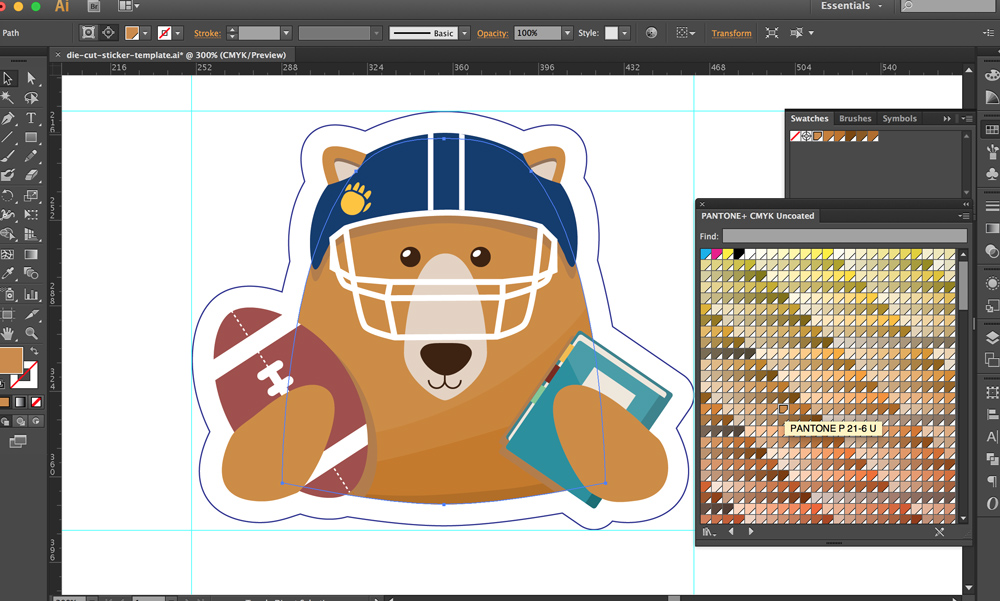
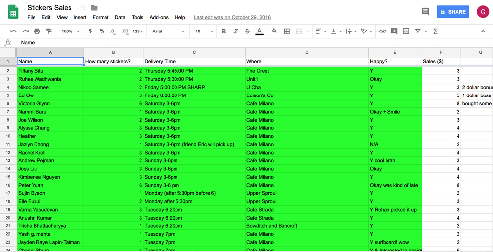
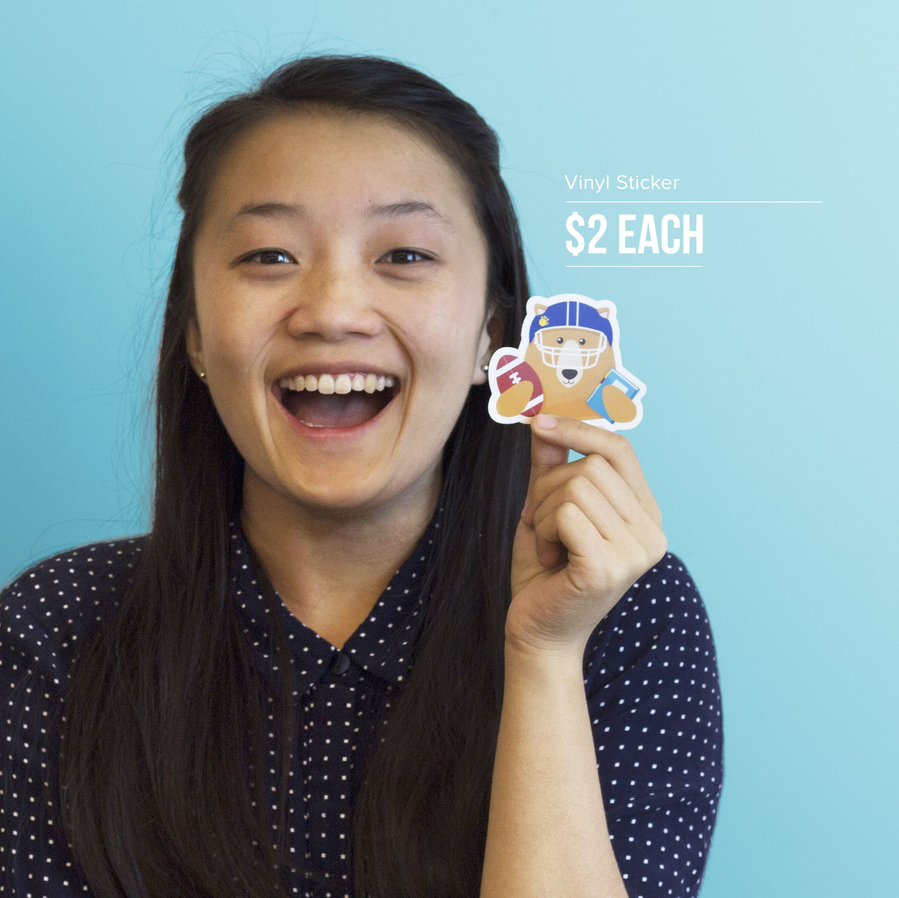
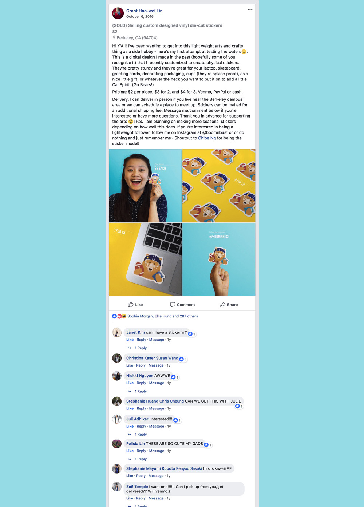
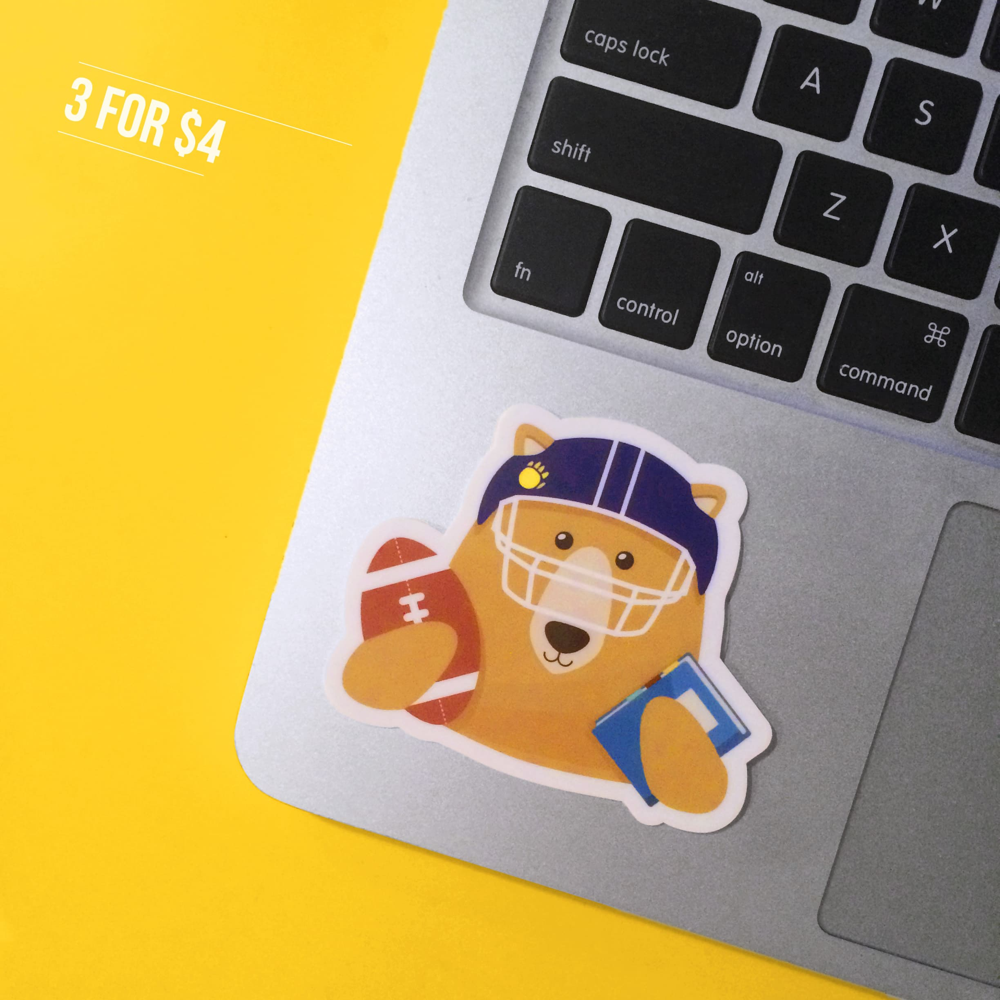
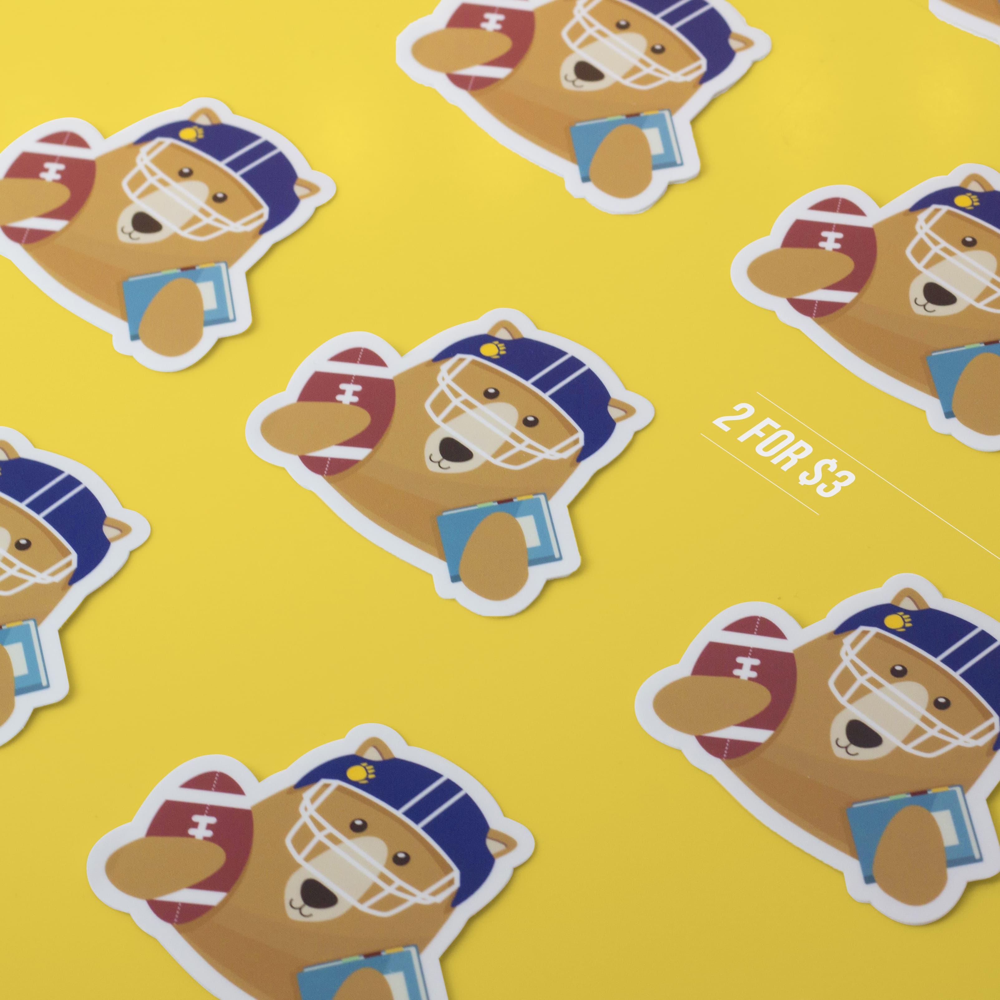

As a side hobby, I decided to take an illustration of mine and turn it into a durable, water resistant sticker that caters to the students at UC Berkeley (also my Alma Mater).
The process went from preparing the sticker design with the correct CMYK, test prints, size checks, vendor options all the way to crafting the right marketing post and posting at the right time to sell all of the stickers I made (except the few I kept for friends and family).
When I was working as a graphic designer at Cal Dining, I have always wanted to turn illustrations I worked on into physical stickers as one of my personal projects (with permission, of course), and I finally did it! I have to say, the outcome was better than I expected considering I only made 1 post on a student For Sale page on Facebook. Delivery was proven to be something I needed to iterate on for future business. I ordered 100 stickers from Sticker Mule and reserved 10 stickers for myself— within one week, all 90 stickers were sold and I have received quite a few unexpected messages as well.
The illustration was done for digital display originally and was not based on a PMS color. I did a few color matching and print test to arrive at the ideal colors I was looking for. I want to make sure the stickers stand out whatever surfaces they end up being on, and so I added the white borders to ensure contrast.
Depite the higher price point, I decided to go with Sticker Mules for production becuase of the higher quality and water resistance.
 A google spreadsheet I used to coordinate sales.  My coworker Chloe at the time agreed to model for me. (Thank you, Chloe!)  I was surprised by the amount of responses after strategically posting it on Thursday night.  If you are interested in doing a customized shot in this style. Shoot me a message!